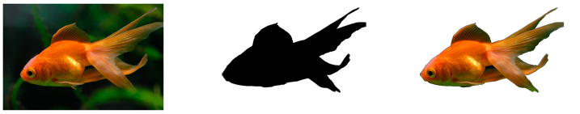

This topic describes how to use a bitmap as an opacity mask by calling the ID2D1Factory::FillOpacityMask method. The opacity mask is a bitmap that supplies the coverage information that is represented by the alpha channel, which controls the transparency of the content that is rendered. This approach is more efficient than using layers with an opacity mask. For more information, see Layers Overview.
To clip a region
The following illustration shows the original bitmap on the left, the bitmap mask in the center, and the bitmap clipped to the mask on the right.

The following code shows how to clip the region with the mask shown in the preceding illustration. It first loads the original bitmap and the bitmap mask. And then creates a bitmap brush with the original bitmap.
// Create the bitmap to be used by the bitmap brush
if (SUCCEEDED(hr))
{
hr = LoadResourceBitmap(
m_pRenderTarget,
m_pWICFactory,
L"GoldFish",
L"Image",
&m_pOrigBitmap
);
}
if (SUCCEEDED(hr))
{
hr = LoadResourceBitmap(
m_pRenderTarget,
m_pWICFactory,
L"GoldFishMask",
L"Image",
&m_pBitmapMask
);
}
if (SUCCEEDED(hr))
{
D2D1_BITMAP_BRUSH_PROPERTIES propertiesXClampYClamp = D2D1::BitmapBrushProperties(
D2D1_EXTEND_MODE_CLAMP,
D2D1_EXTEND_MODE_CLAMP,
D2D1_BITMAP_INTERPOLATION_MODE_NEAREST_NEIGHBOR
);
hr = m_pRenderTarget->CreateBitmapBrush(
m_pOrigBitmap,
propertiesXClampYClamp,
&m_pOriginalBitmapBrush
);
if (SUCCEEDED(hr))
{
hr = m_pRenderTarget->CreateBitmapBrush(
m_pBitmapMask,
propertiesXClampYClamp,
&m_pBitmapMaskBrush
);
}
}
It then calls SetAntialiasMode to set the antialias mode. Call FillOpacityMask to use a bitmap mask to clip the original bitmap.
// D2D1_ANTIALIAS_MODE_ALIASED must be set for FillOpacityMask
// to function properly.
m_pRenderTarget->SetAntialiasMode(D2D1_ANTIALIAS_MODE_ALIASED);
m_pRenderTarget->FillOpacityMask(
m_pBitmapMask,
m_pOriginalBitmapBrush,
D2D1_OPACITY_MASK_CONTENT_GRAPHICS,
&rcBrushRect,
NULL
);
m_pRenderTarget->SetAntialiasMode(D2D1_ANTIALIAS_MODE_PER_PRIMITIVE);
For more information about opacity masks, see the Opacity Masks Overview.
Â
Â